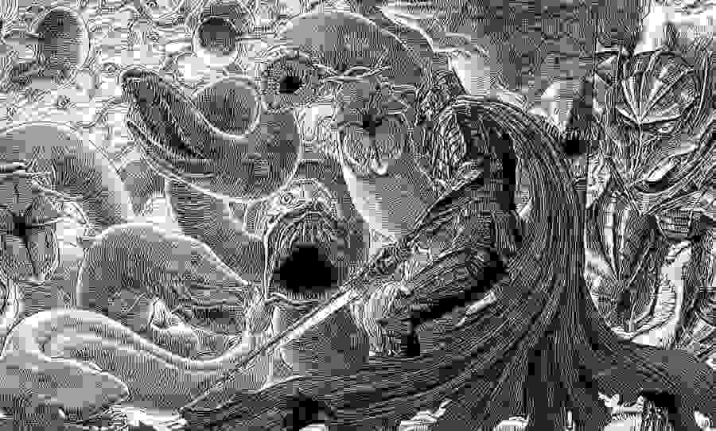

Filosofía de Berserk
La explicación sobre los elementos en el mundo de Berserk se asemeja al razonamiento de Aristóteles por la cual los cuatro elementos materiales eran empujados a una posición natural, con los elementos más pesados cayendo a mayor velocidad. Esto explicaría los poderes de Femto y el manejo de la Matadragones.
Berserk, la historia
Berserk nos cuenta la historia de Guts , un antihéroe mercenario que vaga por el mundo en solitario en búsqueda de Apóstoles , unos seres demoníacos que antaño fueron humanos pero que sacrificaron una parte importante de sus vidas para conseguir poderes que les permitieran alcanzar sus más oscuros deseos.

Legado
Berserk está considerado como una de las obras más importantes en el género de la fantasía oscura. Algunos mangakas de fantasía oscura que han afirmado influenciarse por Berserk han sido Hajime Isayama (Ataque a los Titanes), Kazue Kato (Blue Exorcist), y Yana Toboso (Black Butler). En el mundo de la música también ha tenido un fuerte impacto, especialmente en el género Metal:La banda finlandesa de heavy metal Battle Beast ha escrito canciones acerca de Berserk, muchas de ellas en su álbum homónimo de 2013.

PRIMER ARCO
Probablemente la saga más famosa de todas, es un racconto que muestra la cruda niñez de Guts y su vida como mercenario, viajando y cambiando de ejército constantemente. Guts termina uniéndose, en un principio en contra de su voluntad, a la Banda del Halcón, liderada por Griffith, ascendiendo hasta convertirse en el capitán del escuadrón de asalto de la banda y mostrando los sucesos que desembocaron en su relación con Casca, su separación de la banda, el arresto de Griffith y la traición de este hacia sus compañeros, que termina provocando el Eclipse e invocando a la Mano de dios, lo que concluye en la masacre que acaba con toda la banda.
Kentaro Miura
Kentarō Miura (三浦 建太郎 Miura Kentarō?, 11 de julio de 1966 - 6 de mayo de 2021) fue un mangaka (dibujante de mangas) japonés. Fue más conocido por su popular manga de fantasía oscura, Berserk. En 1988, Miura volvió con un manga de 48 páginas titulado Berserk The Prototype, que fue una introducción al posterior y conocido manga Berserk. Este prototipo lo llevó a ganar un premio de Comi Manga School. En 1989, Kentarou comenzó un proyecto titulado Oh-Roh (王狼 ōrō?) basado en el guion de Buronson, escritor de Hokuto no Ken (El Puño de la Estrella del Norte). Fue publicado mensualmente en la revista Japanese Animal House en los números 5 y 7 de ese año.
La Banda del Halcón
Según la descripción en inglés dada en Sword of the Berserk: Guts' Rage, la "Banda de Halcones" era un ejército de afamados guerreros con más de mil miembros. Formados por Griffith, realizaron muchos logros con las armas en el campo de batalla, siendo temidos en el reino de Midland.
Noticias de Berserk
Berserk se toma un descanso hasta agosto
Studio Gaga y Kouji Mori se toman un descanso con la obra hasta el 12 de agosto.
BERSERK SE TOMA UN DESCANSO HASTA AGOSTO
El pasado 24 de junio Studio Gaga y Kouji Mori continuaron con la publicación de Berserk tras el fallecimiento de su autor, Kentaro Miura. Poco tiempo ha pasado para que la obra vuelva a pausarse. Después del capítulo de esta semana, la obra se tomará un breve descanso y no regresará a las páginas de la revista Young Animal con la publicación en el número 16 de este año del magazine manga de Hakusensha de un nuevo capítulo. Dicho número de la revista saldrá a la venta el 12 de agosto.
SECCION MUSICA
INGRESA AL LINK PARA LA PLAYLIST DE OST BERSERK
HAZ CLICK AQUI

{kind=link}
{kind=link}
{kind=link}
{kind=link}
{kind=link}